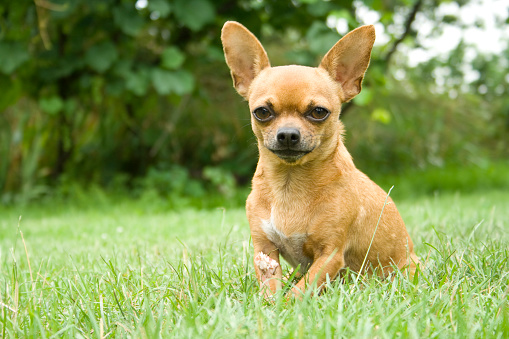

HERE IS A LIST OF 5 POPULAR DOG BREEDS
-
The German Sherperd

German Shepherds are medium to large-sized dogs.[24] The breed standard height at the withers is 60–65 cm (24–26 in) for males, and 55–60 cm (22–24 in) for females.[25][26][27] German Shepherds are longer than they are tall, with an ideal proportion of 10 to 8+1⁄2. The AKC official breed standard does not set a standard weight range.[28] They have a domed forehead, a long square-cut muzzle with strong jaws and a black nose. The eyes are medium-sized and brown. The ears are large and stand erect, open at the front and parallel, but they often are pulled back during movement. A German Shepherd has a long neck, which is raised when excited and lowered when moving at a fast pace as well as stalking. The tail is bushy and reaches to the hock.[26] German Shepherds have a double coat which is close and dense with a thick undercoat. The coat is accepted in two variants: medium and long. The gene for long hair is recessive, and therefore the long-haired variety is rarer. Treatment of the long-haired variation differs across standards; it is accepted but does not compete against standard-coated dogs under the German and UK Kennel Clubs while it can compete with standard-coated dogs, but is considered a fault, in the American Kennel Club.[26][28][29] The FCI accepted the long-haired type in 2010, listing it as the variety b, while the short-haired type is listed as the variety a.[30] Most commonly, German Shepherds are either tan/black or red/black. Most colour varieties have black masks and black body markings which can range from a classic "saddle" to an overall "blanket". Rarer colour variations include sable, pure-black, pure-white, liver, silver, blue, and panda varieties. The all-black and sable varieties are acceptable according to most standards; however, the blue and liver are considered to be serious faults and the all-white is grounds for instant disqualification from showing in conformation at All Breed and Specialty Shows.[28]
German Shepherds are a popular selection for use as working dogs.[54] They are known for being easy to train and good for performing tasks and following instructions. They are especially well known for their police work, being used for tracking criminals, patrolling troubled areas and detection and holding of suspects. Additionally, thousands of German Shepherds have been used by the military. These military working dogs (MWD) are usually trained for scout duty, and they are used to warn soldiers to the presence of enemies or of booby traps or other hazards.[55] German Shepherds have also been trained by military groups to parachute from aircraft[56] or as anti-tank weapons. They were used in World War II as messenger dogs, rescue dogs and personal guard dogs.[4] A number of these dogs were taken home by foreign servicemen, who were impressed by their intelligence.[4] The German Shepherd is one of the most widely used breeds in a wide variety of scent-work roles. These include search and rescue, cadaver searching, narcotics detection, explosives detection, accelerant detection and mine detection dog, among others. They are suited for these lines of work because of their keen sense of smell and their ability to work regardless of distractions.[55] At one time the German Shepherd was the breed chosen almost exclusively to be used as a guide dog for the visually impaired. When formal guide dog training began in Switzerland in the 1920s under the leadership of Dorothy Eustis, all of the dogs trained were German Shepherd females.[57] An experiment in temperament testing of a group of Labrador Retrievers and German Shepherds showed that the Retrievers scored higher on average in emotional stability, ability to recover promptly from frightening situations, cooperative behaviour and friendliness; while the German Shepherds were superior in aggression and defensive behaviour. These results suggested that Labrador Retrievers were more suited to guide dog work while German Shepherds were more suited to police work.[58] Currently, Labradors and Golden Retrievers are more widely used for this work, although there are still German Shepherds being trained. In 2013, about 15% of the dogs trained by Guide Dogs of America were German Shepherds, while the remainder are Labrador Retrievers and Golden Retrievers.[59] The Guide Dogs for the Blind Association in the United Kingdom trains some German Shepherds,[60] while the comparable organisation in the US only trains Labrador Retrievers,
Here are some photos of German Sheperd.......


-
Chihuahua
Chihuahuas are the smallest breed recognized by some kennel clubs.[10] Current breed standards defined by registries specify an "apple-head" or "apple-dome" skull conformation.[11] Chihuahuas occur in virtually any color combination, from solid to marked or splashed.[12] Apple-dome Chihuahuas have large, round eyes and large, erect ears, set in a high, dramatically rounded skull.[10] The stop is well defined, forming a near-90-degree angle where the muzzle meets the skull.[13] Dogs of the older "deer" type, with a flat-topped head, more widely set eyes, larger ears, and longer, more slender legs, may still be registered, but the deer head is not considered a separate type in competition and a deer-head dog's digression from the breed standard is considered a fault.[11][13] Breed standards for this dog do not generally specify a height; only a weight and a description of their overall proportions. Generally, the height ranges between 6 and 9 in (15 and 23 cm);[10] however, some dogs grow as tall as 30 to 38 cm (12 to 15 in). Both British and American breed standards state that a Chihuahua must not weigh more than 5.9 lb (2.7 kg) for conformation.[10] However, the British standard also states that a weight of 4–6 lb (1.8–2.7 kg) is preferred. A clause stating "if two dogs are equally good in type, the more diminutive one is preferred" was removed in 2009.[14] The Fédération Cynologique Internationale standard calls for dogs ideally between 1.5 and 3.0 kg (3.3 and 6.6 lbs), although smaller ones are acceptable in the show ring.[15] Pet Chihuahuas (those bred or purchased as companions rather than as show dogs) often range above these weights, even above 10 lb (4.5 kg), if they have large bone structures or are allowed to become overweight.[10] This does not mean that they are not purebred Chihuahuas; they just do not meet the requirements to enter a conformation show. Oversized Chihuahuas are seen in some of the best, and worst, bloodlines. Chihuahuas do not breed true for size, and puppies from the same litter can mature in drastically different sizes from one another. Also, larger breeding females are less likely to experience dystocia (obstructed labor). Many breeders try to breed Chihuahuas to be as small as possible, because those marketed as "teacup" or "tiny teacup" demand higher prices.[16] The Fédération Cynologique Internationale, which represents the major kennel clubs of 84 countries, disqualified the merle coat pattern, which appears mottled.[15] In May 2007, The Kennel Club decided not to register puppies with this coloration due to the health risks associated with the responsible gene, and in December of that year, formally amended its breed standard to disqualify merle dogs.[17] Like many other small dogs, the Chihuahua may display above-average aggression toward people and other dogs.
The Chihuahua has some genetic predisposition to several neurological diseases, among them atlantoaxial instability, ceroid lipofuscinosis, congenital deafness, congenital hydrocephalus, muscular dystrophy, necrotizing meningoencephalitis, and neuroaxonal dystrophy.[20]: 3 [21] In a radiographical study of canine periodontal disease in 2001, the Chihuahua was found to have the lowest incidence of the six breeds studied.[22]: 206 [23]: 532 The predisposition to medial patellar luxation is believed to be significant.[24]: 46 Additionally, the main cause of death in Chihuahua's has been found to be heart failure. The occurrence of heart failure is more likely to happen during their golden years. It has been noted that 75% of heart diseases has been due to valve deterioration. A valve, which regulates their blood flow, becomes deformed overtime. This deformity that increases over the years causes their blood to leak around the valve, which ultimately strains the heart and can be their cause of death.[25]
Below is other pictures of a Chihuahua.......
-
Dobermann

The Dobermann (/ˈdoʊbərmən/; German pronunciation: [ˈdoːbɐman]), or Doberman Pinscher in the United States and Canada, is a medium-large breed of domestic dog that was originally developed around 1890 by Louis Dobermann, a tax collector from Germany.[2] The Dobermann has a long muzzle. It stands on its pads and is not usually heavy-footed. Ideally, they have an even and graceful gait. Traditionally, the ears are cropped and posted and the tail is docked. However, in some countries, these procedures are now illegal and it is often considered cruel and unnecessary. Dobermanns have markings on the chest, paws/legs, muzzle, above the eyes, and underneath the tail. Dobermanns are known to be intelligent, alert, and tenaciously loyal companions and guard dogs
World breed standards are published by the Fédération Cynologique Internationale, or FCI (World Canine Organisation), on the advice of the IDC (International Dobermann Club), which is the Dobermann breed's governing council and has 36 countries in its member list. To become a world champion, dogs are judged to FCI standards. The American Kennel Club (AKC) has its own standards, as do some other countries, although most still adhere to FCI standards. The breed standard describes the Dobermann as a dog of medium size that is also strong and muscularly built. In order to be eligible to meet these standards, the body of the Dobermann should appear to be almost square. It should also appear elegant and noble. The dog was originally intended as a guard dog,[4][5] so males typically have a muscular and intimidating appearance.[4][5] Females are usually thinner, but should not be spindly. The AKC breed standard differs from the FCI standards, with the latter being an often larger and heavier dog. This has led some to argue that Dobermanns and Doberman Pinschers should be considered and evaluated differently.
below includes further photos of Dobermann....
-
Bulldog

Bulldogs have characteristically wide heads and shoulders along with a pronounced mandibular prognathism. There are generally thick folds of skin on the brow; round, black, wide-set eyes; a short muzzle with characteristic folds called a rope or nose roll above the nose; hanging skin under the neck; drooping lips and pointed teeth, and an underbite with an upturned jaw. The coat is short, flat, and sleek with colours of red, fawn, white, brindle, and piebald.[16] They have short tails that can either hang down straight or be tucked in a coiled "corkscrew" into a tail pocket. In the United Kingdom, the breed standards are 55 lb (25 kg) for a male and 50 lb (23 kg) for a female.[19] In the United States, the standard calls for a smaller dog — a typical mature male weighs 50 lb (23 kg), while mature females weigh about 40 lb (18 kg).[20]. According to the American Kennel Club (AKC), a Bulldog's disposition should be "equable and kind, resolute, and courageous (not vicious or aggressive), and demeanor should be pacifist and dignified. These attributes should be countenanced by the expression and behavior".[21] Breeders have worked to remove aggression from the breed.[16] Most have a friendly, patient, but stubborn nature. Bulldogs are recognized as excellent family pets because of their tendency to form strong bonds with children.[16] Generally, Bulldogs are known for getting along well with children, other dogs, and other pets.
Despite slow maturation so that growing up is rarely achieved by two and a half years, Bulldogs' lives are relatively short. At five to six years old, they start to show signs of aging.[citation needed] A 2004 UK survey of 180 Bulldog deaths puts the median age at death at 6 years 3 months. The leading cause of death of Bulldogs in the survey was cardiac related (20%), cancer (18%), and old age (9%). Those that died of old age had an average lifespan of 10 to 11 years.[2] A 2013 UK vet clinic survey of 26 Bulldogs puts the median lifespan at 8.4 years with an interquartile range of 3.2–11.3 years.[3] The UK Bulldog Breed Council website lists the average life span of the breed as 8–10 years. A study by the Royal Veterinary College found that Bulldogs are a much less healthy breed than average, with over twice the odds of being diagnosed with at least one of the common dog disorders investigated in the study.[25] The English Bulldog is among the breeds that are most severely affected by brachycephalic airway obstructive syndrome, due to extreme brachyphalia (shortened snout), a large tongue and palate, and other morphological issues.[26][27] Like all brachycephalic dogs, bully breeds often suffer from brachycephalic airway obstructive syndrome (BAOS). A degree of BOAS has been normalized in the breed, as an inevitable consequence of their distinctive face.[26] The condition manifests in a variety of ways, often in the form of intolerance to heat and physical exertion. Since dogs regulate heat primarily by panting, Bulldogs are very sensitive to heat; they may actually gain rather than lose heat due to their inefficient breathing, leading to a vicious cycle. Bulldogs must be given plenty of shade and water, and must be kept out of standing heat.[16][28] They can even die from hyperthermia.[16] Bulldogs can be heavy breathers and tend to be loud snorers with interrupted sleep; another indicator of brachycephalic airway obstructive syndrome.[29] Many airlines ban the breed from flying in the cargo hold due to a high rate of deaths from air pressure interacting poorly with their breathing problems.
The following are other photos of a bulldog

-
The Golden Retriever
The Golden Retriever is a powerfully built, medium-sized breed of dog; according to the Kennel Club breed standard, dogs stand from 56 to 61 centimetres (22 to 24 in) and bitches from 51 to 56 centimetres (20 to 22 in).[5][8] Healthy adult examples typically weigh between 25 and 34 kilograms (55 and 75 lb).[9] The Golden Retriever has a broad head with a well-defined stop, with dark eyes set well apart, a wide and powerful muzzle, a large black nose, dark-pigmented and slightly drooping flews, and ears of moderate size set high and hanging with a slight fold.[9][10] The neck is muscular and fairly long with loose-fitting skin, the shoulders well laid-back and long-bladed, and the body deep through the chest with well-sprung ribs.[5][9][10] The back is usually level from withers to croup and the long, straight tail is usually carried flat, roughly in line with the back.[5][9][10] The forelegs are straight with good bone, the hind legs are powerful with well bent stifles and muscular thighs, and the feet are cat-like.[5][9][10]
The Golden Retriever is considered an intelligent, gentle natured and very affectionate breed of dog.[2][7] As is typical with retriever breeds, the breed is generally calm and biddable, being very easy to train and extremely keen to please their master.[5][7] The breed is known to make excellent pets and family dogs, being generally extremely tolerant of children and keen to accompany any member of the family in a range of activities.[3] Due to their affable natures, the breed is often completely devoid of guarding instincts.[3] The breed usually retains many of their gundog traits and instincts including an excellent sense of smell and a strong instinct to retrieve; even among those not trained as gundogs it is typical for Golden Retrievers to present their owners with toys or other objects.[5][7] Compared to other retriever breeds the Golden Retriever is typically quite slow to mature.[7][11]. The Golden Retriever is still used as a gundog by sportsmen, both as a hunting companion in the field and for competing in field trials.[2][7][11] It is used more for retrieval of land-based gamebirds such as grouse and partridge than for wildfowl hunting.[7] Those used as gundogs are usually from working lines specifically bred for field use; dogs from pet or show lines are rarely suitable.[2][7][11] A Golden Retriever with a traditional dense double coat is well suited to working in cold and wet conditions, as the coat provides water resistance and insulation.[7][11] Compared to other retriever breeds, the Golden Retriever is not a strong swimmer; its long coat causes it to sit low in the water when swimming.[7]
These are other Photos of a Golden Retriever

14 Olarenwaju Street
Sheraton bus stop
off ogba expressway
ikeja along
Lagos, Nigeria.